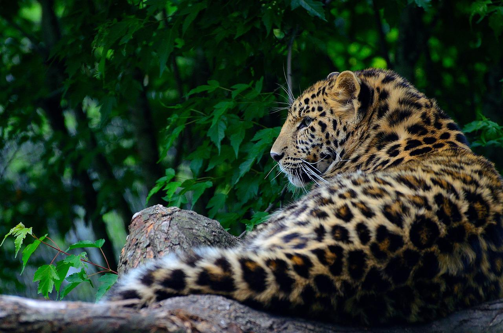

There’s a lot of different types of activities in Jaipur, like going on a beautiful safari trip in Jhalana. In the sarafis such as Jhalana Leopard Safari, you can visit the wilderness of the leopards. They have around 30-35 leopards in 23 square km where they live. You will experience the beautiful nature of leopards. We also have Dogma Jaipur Safari where you can see the wilderness of the animal kingdom and see its beautiful nature. The pure nature of the lions and all the other exotic animals there.
Folk festivals are a really big thing in India and in Jaipur they have a lot of different festivals. Their festivals are very colorful and would suggest looking for souvenirs to buy. One of the fun things you can do in these festivals is to fly kites. At the Man Sagar Lake it’s very popular to use kites. The festival is called Uttarayan. There are also festivals like Gangaur festival. It is a festival about the celebration of the union of Lord Shiva and Goddess Parvati. What they do is that the women decorate the palm and fingers with henna to pray for a happy married life.
You can visit the Elefantic Elephant Farm. Their farm is about feeding the elephants they have. Because elephants are a big part of Rajasthan you can go feed, walk and bathe the elephants. Elefantic Elephant Farm is a sanctuary for protecting these asian elephants. You can spend an entire day with these elephants and also learn how to communicate with the elephants.